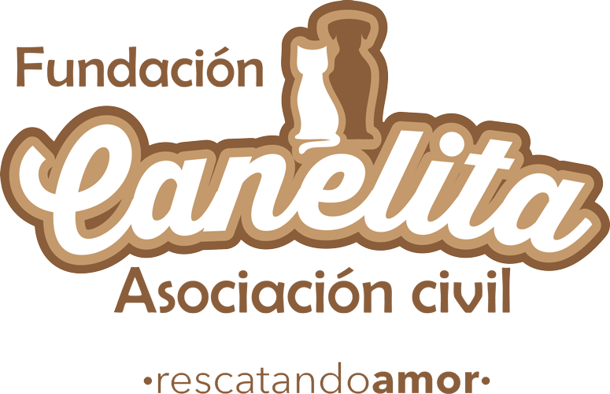

Bienvenidos a nuestra
pagina peluda...
Aquí podrás conocer como nuestra Fundación trabaja con programas de Esterilización, educación, medicación y adopción en pro de los perros y gatos sin fines de lucro.
Únete y se parte de esta hermosa labor.